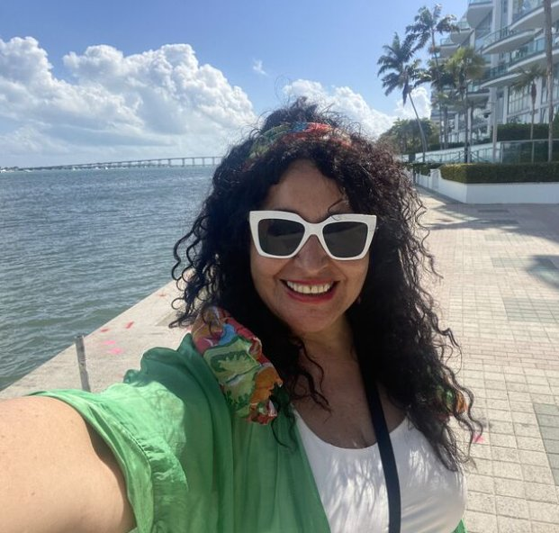
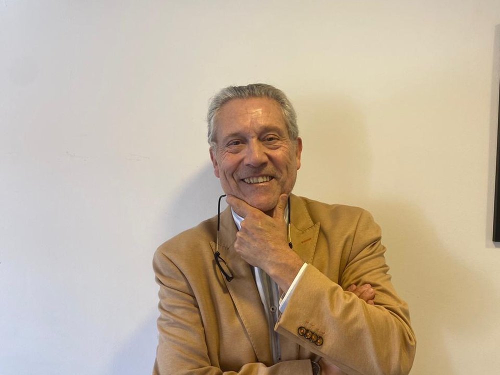

Programa de Certificación Directa de 120 horas cronológicas que integra el Modelo Grow, Coaching Integral Sistémico (CIS), la Programación Neurolingüística (PNL), Coaching Ejecutivo y Metodologías del Healthy Coaching, alineados a los estándares de la ICF.
El programa sintetiza los estándares de corrientes globales de coaching en un solo plan de estudios, con entrenamiento práctico intensivo guiado por coaches mentores certificados.
Modelo GROW (Whitmore), Coaching Integral Sistémico (CIS), PNL, Coaching Sistémico y Coaching Ejecutivo, alineados a los estándares de la ICF.
40 horas de práctica en aula como Coach, Coachee y Observador, con retroalimentación inmediata de coaches mentores certificados.
Desde la semana 12, cada alumno acompaña a un cliente real (pro bono), registrando 5 sesiones auditables en su bitácora de coaching.
Martes y jueves, 18:30 a 21:00 hrs. Cada módulo combina cátedra teórico-metodológica con laboratorios de práctica guiada y supervisada.
Un equipo con trayectoria académica y ejecutiva, certificación internacional y experiencia real en organizaciones.

Ingeniera Comercial y Trabajadora Social. PhD en Educación, Cátedra UNESCO (Argentina). MBA, Universidad de Valparaíso. Master in Healthy Coaching, certificación ICF. Especialización en Coaching Integral Sistémico, FEBRACIS (Brasil). Metodología Belbin (España). Diplomados en Igualdad de Género y en Competencias Laborales.
Experiencia laboral: Directora de Desarrollo Comunitario en CODELCO Ventanas. Ministerio del Trabajo — Encargada Nacional del Programa Diálogo Social (OIT). Responsable del Diplomado de RSE impartido en Bolivia con patrocinio de la OIT.
Academia: Docente en la Escuela de Ingeniería de Transporte y la Escuela de Ingeniería Civil Industrial (PUCV / Universidad de Valparaíso). Profesora invitada en universidades de Suecia, España, Colombia, México, Bolivia y Argentina, en cátedras de Negociación Avanzada, Responsabilidad Social y Gestión de Empresas y RRHH. Ex presidenta de la Comisión de RSE de la Cámara Regional de Comercio de Valparaíso. Relatora del programa BID.

Piloto Primero de la Marina Mercante Nacional, Ingeniero en Negocios Internacionales y Psicólogo Organizacional. MBA y Master en Administración y Dirección de Empresas (España). Master en Dirección de RRHH, en Psicología del Comportamiento y en Psicología Positiva (España). Harvard ManageMentor (2025). Master en Coaching con PNL e Intervención Sistémica (España). Especialización en Coaching Integral Sistémico, FEBRACIS (Brasil).
Experiencia laboral: Más de 40 años en cargos ejecutivos en la industria naviera, en Chile y en el extranjero, incluida la Empresa Nacional del Petróleo (ENAP).
Academia: FEN, Universidad de Chile; Escuela de Transportes, Pontificia Universidad Católica de Valparaíso; Facultad de Ingeniería Civil Industrial, Universidad de Valparaíso; Ingeniería Marina Mercante, Universidad Andrés Bello. Consejo Asesor Empresarial de la carrera de Ingeniería de Transportes, PUCV.
Matricúlate en el programa o agenda una reunión online con nuestro equipo para resolver tus dudas.
Resolvemos tus dudas sobre el programa